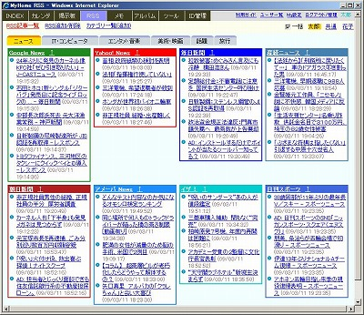
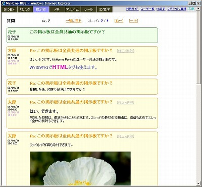
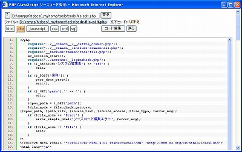
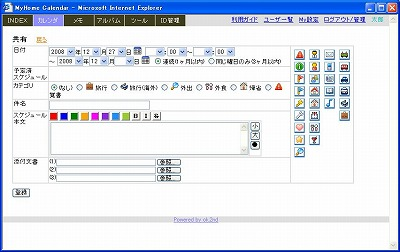
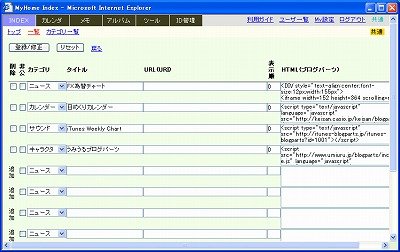

MyHome Portal 変更履歴
以下は、バージョン1.50以前の履歴です。 最新(1.51以降)の履歴に戻る
MyHome Portal Ver.1.50 (2009/03/30)
- 変更点
- 「アルバム」のサムネイル表示、スライドショー表示の画像表示サイズを、横幅(width)一定でなく高さ(height)一定に仕様変更しました。
- 「アルバム」のスライドショー表示に、おまけ機能として、画像のジグソーパズル化ツールを追加しました。任意の画像をジグソーパズルに出来ます。Snapfitを使っています。IEでは正常動作しません。不要な場合は、定義ファイルで機能を除くこともできます。
参考：http://phpspot.org/blog/archives/2009/03/javascriptsnapf.html
Powered by http://www.netzgesta.de/snapfit/ - IE7でiframeのheight="100%"ではフレームの縦が縮んでしまう対策としてheight="1000px"に変更。外部コンテンツ組み込みサンプル(実運用サンプル/youtube/index.php)、ホームページのモノトーン表示、ホームページの拡大縮小表示をそれぞれ修正。
<iframe src="" width="100%" height="100%"></iframe>
↓↓↓<iframe src="" width="100%" height="1000px"></iframe>

- 変更モジュール
・__common__/__define_common.php
・photo/index.php, __define.php
・tools/monotone.php, zoom.php, zoom-page.php
・実運用サンプル/youtube/index.php
・__define_common_my_sample.php - 追加モジュール
・photo/jigsaw.php ・scripts/snapfit/一式
MyHome Portal Ver.1.49 (2009/03/24)
- 変更点
- IE7でサムネイル等の画質が汚いのを高画質化しました。以下のページを参考にしました。IE6では効果が無いようです。
http://phpspot.org/blog/archives/2009/03/css_81.html
http://devthought.com/tumble/2009/03/tip-high-quality-css-thumbnails-in-ie7/ - フォーム入力・修正ページを開いた状態で、別ウインドウで別ユーザーで再ログインすると、 誤ったユーザーアカウントでデータ登録・更新される可能性がある問題を修正。 (POST前のログインID、カレントIDを<input type="hidden">で渡し、POST後のセッション変数のログインID、カレントIDと一致しているかチェックするようにしました。)
- ユーザー自身によるユーザー登録(newaccount.php)ができない設定を、定義ファイルで設定できるようにしました。
- 「My設定 」の「My参照メンバ修正」「公開先メンバ修正」を、一覧からの選択式に変更。


- PHPソースのprintをechoに変更。
- 変更モジュール
・__common__/__define_common.php, include-common-all.php, include-common-mp-list.php
・account/edit-friends.php, edit-public.php
・フォーム入力・修正関連モジュール全て
・画像表示関連モジュール全て - 追加モジュール
・account/list-my-template-edit-friends.php, list-my-template-edit-public.php
MyHome Portal Ver.1.48 (2009/03/15)
- 変更点
- メインコンテンツとして「RSSリーダー」を追加しました。タイル形式で記事を5件ずつ一覧表示します。↑クリックでポップアップウィンドウで全件表示します。
RSSパーサーは、MagpieRSSを使用。
http://magpierss.sourceforge.net/
RSSのカテゴリ・ナビは、Nifty Cornersを使って角丸タグにしました。
http://www.html.it/articoli/nifty/index.html
- トップページのブローグパーツ表示機能でRSS記事表示を設定できます。
サンプルファイルblog-parts/rss-google-news.inc, rss-ameba-news.incを入れています。 - トップページの一覧形式のレイアウトを変更。
- ログイン画面や入力画面で、テキストボックスに入力フォーカスを設定。
- メイン・ナビメニューの「INDEX」選択で、常にタイル型トップページを表示するように仕様変更。
- ユーザー切り替えをコンテンツ毎の他に、全コンテンツ一括切り替えもできるようにしました。
 - ≪サンプルデータベース作成≫
Ver.1.47以前で既にテスト環境を構築済みの場合は、以下の手順でRSSリーダーのサンプルデータベースを追加してください。
コマンドプロンプトで以下を実行してください。mysql -u root -pパスワード create database _db_rss; exit; d: cd "D:\xampp\htdocs\_myhome\z_db_backup" mysql -u root -pパスワード _db_rss < _db_rss.bk.txt mysql -u root -pパスワード _db_rss < create_view_db_rss.txt mysql -u root -pパスワード GRANT SELECT,INSERT,UPDATE,DELETE ON _db_rss.* TO myhome@localhost; FLUSH PRIVILEGES; exit;
- ≪実運用環境設定≫
Ver.1.47以前で既に実運用環境を構築済みの場合は、以下の手順でRSSリーダーの実運用環境を追加してください。
＊実運用データベース作成
・MySQLを一旦停止します。XAMPPコントロールパネルを使って停止してください。
・サンプルデータベースを名前を変えてコピーすることで実運用DBを作成します。 データベース名を「_db_rss」をコピーして「_mydb_rss」とします。 コマンドプロンプトで以下を実行してください。mkdir D:\xampp\mysql\data\_mydb_rss copy D:\xampp\mysql\data\_db_rss\* D:\xampp\mysql\data\_mydb_rss
・MySQLを開始
・データベースのビューを作成します。コマンドプロンプトで以下を実行してください。d: cd "D:\xampp\htdocs\_myhome\z_db_backup" mysql -u root -pパスワード _mydb_rss < create_view_mydb_rss.txt
・ユーザーアカウントのアクセス権を設定します。サンプルデータと同じユーザー名の例です。
コマンドプロンプトで以下を実行してください。mysql -u root -pパスワード GRANT SELECT,INSERT,UPDATE,DELETE ON _mydb_rss.* TO myhome@localhost; FLUSH PRIVILEGES; exit;
＊定義ファイル D:\xampp\htdocs\_myhome_myset\__define_contents_my.phpに、以下を追加。$navi_item[] = array("href"=>"rss/", "query"=>"arg=session", "name"=>"ＲＳＳ");＊定義ファイル D:\xampp\htdocs\_myhome_myset\__define_common_my.phpに、以下を追加。define("_DB_SCHEMA_rss", "_mydb_rss"); - ≪RSSリーダー用プロキシ設定≫
企業内イントラなど、プロキシ経由の環境では、定義ファイルで、RSSリーダー用のプロキシサーバの設定をしてください。
define("MAGPIE_PROXY_HOST", "xxx"); // RSSリーダー用 プロキシサーバ アドレス
define("MAGPIE_PROXY_PORT", "xxx"); // RSSリーダー用 プロキシサーバ ポート
・__common__/include-common-all.php, include-common-html.php, include-common-mp-list.php
・__common__/__define_common.php, __define_contents.php
・account/change-account.php, login.php
・__define_common_my_sample.php, __define_contents_my_sample.php
・index/list.php
・style/original/common.css
・rss/ 一式
・rss/magpiers/ 一式
・scripts/nifty/ 一式
・blog-parts/rss-google-news.inc, rss-ameba-news.inc
・index/list-my-template.php
・style/original/rss.css
・db_backup.txt.php, db_restore.txt.php
・z_db_backup/_db_rss.bk.txt, create_view_db_rss.txt, create_view_mydb_rss.txt
MyHome Portal Ver.1.47 (2009/03/03)
- 変更点
- トップページに掲示板の最新の投稿を数件分表示できるようにしました。
- トップページ、カレンダー、ID管理等のページデザインの微調整。
Chrome、Safariでも、デザインの差異がなるべく出ないようにしました。
- 掲示板のスレッド一覧を、デフォルトでは削除済みは表示しない仕様に変更。フィルタ「削除済み投稿を表示」で表示可能に。
- 掲示板のWYSIWYGエディタopenWYSIWYGをGoogle Chromeでも動作するようにしました。Safari 4でも動作します。
ネットで以下のページが見つかったので、これを参考にscripts/openwysiwyg/scripts/wysiwyg-ja.jsを修正。
＜Support for Google Chrome＞
http://www.openwebware.com/forum/viewtopic.php?f=4&t=2138 - カレンダー、掲示板、メモの添付ファイル格納フォルダをユーザーID毎に分ける方式に変更。
__common__/include-common-html.php内のattach_file_view()の仕様変更。引数の先頭に$user_idを追加。
この仕様変更に伴い、登録済みの添付ファイル移動ツール(tools/upload-file-move-147.php)を追加。
Ver.1.46以前で運用開始済みの場合は、以下を、サンプルデータモード、実運用モードそれぞれで実行してください。
http://localhost/_myhome/tools/upload-file-move-147.php
- ツールの「MySQL データベース/テーブル一覧」(tools/mysql-database.php)用に、
ビューのスキーマ表示の権限があるMySQLユーザーを定義できるようにしました。
/htdocs/_myhome_myset/__define_mysql_admin.phpで定義。
(サンプルとして__define_mysql_admin_sample.phpを用意) - 変更モジュール
・__common__/include-common-html.php, include-common-all.php
・index/top.php, __define.php
・calendar/year.php, input.php, _my_calendar.php, list-my-template.php
・memo/input.php, list-my-template.php
・bbs/input.php, view.php, list.php, list-my-add-filter.php
・id-manager/list-my-template.php
・guide/input.php, list-my-template.php
・tools/mysql-database.php
・style/original/index.css, calendar.css, id-manager.css
・scripts/openwysiwyg/scripts/wysiwyg-ja.js - 追加モジュール
・tools/upload_file_move.php
・__define_mysql_admin_sample.php(_myhome_myset/__define_mysql_admin.phpサンプル)
MyHome Portal Ver.1.46 (2009/02/24)
- 変更点
- 掲示板とメモで、動画(FLV)ファイルをアップロードした場合、プレビュー表示するようにしました。
プレビュー表示には、JW FLV Playerを使用。動画(FLV)のファイル名が日本語の場合、プレビューされません。
http://www.longtailvideo.com/
- アップロードファイルのサイズ制限を変える場合は、
D:\xampp\apache\bin\php.iniの以下の設定を変更してApacheを再起動してください。
D:\xampp\php\php.iniではありません。
post_max_size = 16M upload_max_filesize = 32M
(yui/build/fonts/fonts-min.cssを指定していたのが原因)
・__common__/include-common-mp-list.php, __define_common.php, __define_contents.php
・__define_common_my_sample.php, __define_contents_my_sample.php
・bbs/view.php, __define.php, _add_input_header_YUI.php
・memo/list-my-template.php, __define.php
・bbs/player.swf, yt.swf (phpと同じパスにないと動作しないよう(?)なのでここに置きました。)
・memo/player.swf, yt.swf (phpと同じパスにないと動作しないよう(?)なのでここに置きました。)
・scripts/JWPlayer/swfobject.js
・scripts/JWPlayer/movie_preview.js
MyHome Portal Ver.1.45 (2009/02/19)
- 変更点
- メインコンテンツとして「掲示板」を追加しました。MyHome Portal全ユーザー共通の掲示板機能です。
ファイルや写真の添付もできます。投稿の修正、削除、および復活ができます。
投稿の検索ができます。スレッド単位でページ送りしながら投稿を閲覧できます。
カテゴリはシステム管理者のみが追加、修正できます。
投稿表示の角丸ボックスは、Snazzy Bordersを使いました。
http://f32.aaa.livedoor.jp/~azusa/index.php?t=css&p=kadomaru
http://www.cssplay.co.uk/boxes/snazzy.html
投稿はWYSIWYGでHTMLタグも使えます。WYSIWYGエディタはopenWYSIWYGとYahoo! UI Library(YUI):Rich Text Editorのいずれかを使えます。(定義ファイルで設定します。)
openWYSIWYGは、Google Chromeでは使えません。（Ver.1.47で解決）
MyHome Portalでは、いずれのエディタも入力時と入力結果が必ずしも一致しません。一部、動作も不安定です。MyHome PortalのCSSとの相性の問題かもしれません。
文字に色を付けたり、文字サイズを変える程度の利用に留めた方が無難です。 http://www.openwebware.com/
http://developer.yahoo.com/yui/editor/


- ≪サンプルデータベース作成≫
Ver.1.44以前で既にテスト環境を構築済みの場合は、以下の手順で掲示板のサンプルデータベースを追加してください。
コマンドプロンプトで以下を実行してください。mysql -u root -pパスワード create database _db_bbs; exit; d: cd "D:\xampp\htdocs\_myhome\z_db_backup" mysql -u root -pパスワード _db_bbs < _db_bbs.bk.txt mysql -u root -pパスワード _db_bbs < create_view_db_bbs.txt mysql -u root -pパスワード GRANT SELECT,INSERT,UPDATE,DELETE ON _db_bbs.* TO myhome@localhost; FLUSH PRIVILEGES; exit;
- ≪実運用環境追加≫
Ver.1.44以前で既に実運用環境を構築済みの場合は、以下の手順で掲示板機能の実運用環境を追加してください。
＊実運用データベース作成
・MySQLを一旦停止します。XAMPPコントロールパネルを使って停止してください。
・サンプルデータベースを名前を変えてコピーすることで実運用DBを作成します。 データベース名を「_db_bbs」をコピーして「_mydb_bbs」とします。 コマンドプロンプトで以下を実行してください。mkdir D:\xampp\mysql\data\_mydb_bbs copy D:\xampp\mysql\data\_db_bbs\* D:\xampp\mysql\data\_mydb_bbs
・MySQLを開始
・データベースのビューを作成します。コマンドプロンプトで以下を実行してください。d: cd "D:\xampp\htdocs\_myhome\z_db_backup" mysql -u root -pパスワード _mydb_bbs < create_view_mydb_bbs.txt
・ユーザーアカウントのアクセス権を設定します。サンプルデータと同じユーザー名の例です。
コマンドプロンプトで以下を実行してください。mysql -u root -pパスワード GRANT SELECT,INSERT,UPDATE,DELETE ON _mydb_bbs.* TO myhome@localhost; FLUSH PRIVILEGES; exit;
＊サンプルデータの削除
コマンドプロンプトで以下を実行してください。mysql -u root -pパスワード use _mydb_bbs; truncate table m_bbs; exit;
＊定義ファイル D:\xampp\htdocs\_myhome_myset\__define_contents_my.phpに、以下を追加。$navi_item[] = array("href"=>"bbs/", "query"=>"arg=session", "name"=>"掲示板");＊定義ファイル D:\xampp\htdocs\_myhome_myset\__define_common_my.phpに、以下を追加。define("_DB_SCHEMA_bbs", "_mydb_bbs"); define("ATTACH_FILE_FOLDER_bbs", "../../_attach/bbs/");＊添付ファイル用ディレクトリ作成
D:\xampp\htdocs\_attach\bbs
- 変更モジュール
・__common__/include-common-mp-list.php, __define_common.php, __define_contents.php
・__define_common_my_sample.php, __define_contents_my_sample.php
・style/original/common.css - 追加モジュール
・bbs/一式
・scripts/openwysiwyg一式, scripts/yui一式
・style/original/bbs.css, Snazzy.css - 修正ファイル
・db_backup.txt.php, db_restore.txt.php - 追加ファイル
・z_db_backup/_db_bbs.bk.txt, create_view_db_bbs.txt, create_view_mydb_bbs.txt - 追加フォルダ
・_attach/bbs/
MyHome Portal Ver.1.44 (2009/02/01)
- 変更点
- 「ツール」に「Excel to グラフ by Bluff 」を追加しました。
ExcelシートをアップロードしてBluffを使ってグラフ作成をします。
ボタンでグラフ種類やスタイルを変更できます。
アップロードしたExcelシートはMyHomePortalユーザー毎に保存されます。
Excelシートの取り込みには、Spreadsheet_Excel_Readerを使っています。
「実運用サンプル/Excel_to_グラフ_サンプル」フォルダにサンプルのExcelを入れています。
- 「ツール」に「Excel to グラフ by HTML5 」を追加しました。
ExcelシートをアップロードしてHTML5を使ってグラフ作成をします。
ボタンでグラフ種類やスタイルを変更できます。
アップロードしたExcelシートはMyHomePortalユーザー毎に保存されます。
Excelシートの取り込みには、Spreadsheet_Excel_Readerを使っています。
「実運用サンプル/Excel_to_グラフ_サンプル」フォルダにサンプルのExcelを入れています。
- 「ツール」の「PHP/JavaScriptソースコード編集」のテキストエリアの行数を拡げました。また、定義ファイルで変更可能にしました。
- tools/tategaki.phpのmb_convert_encodingの「SJIS」を「SJIS-win」に変更。
- _mobileのmb_convert_encodingの「SJIS」を「SJIS-win」に変更。
- 変更モジュール
・tools/code-file-edit.php, index.php
・__common__/include-common-all.php, __define_common.php
・__define_common_my_sample.php
・/_mobile/__common__/include-common-mobile.php - 追加モジュール
・tools/excel-graph-bluff.php, excel-graph-html5.php
・tools/__define_excel-graph.php, __include-common-excel-graph.php
・tools/phpExcelReader一式
・tools/scripts/Bluff一式
・tools/scripts/html5jp一式
・tools/scripts/excanvas一式
・実運用サンプル/Excel_to_グラフ_サンプル/sample1.xls, sample2.xls - 追加フォルダ
・_attach/excel-graph
MyHome Portal Ver.1.43 (2009/01/23)
- 変更点
- 「ツール」にシステム管理者用機能として「PHP/JavaScript ソースコード表示&編集＋ファイルマネージャー」を追加しました。
- ソースコード整形表示(シンタックスハイライト)ツール「Syntaxhig Hlighter」と、ソースコードエディタ「Edit Area」と、オリジナルのシンプルなファイルマネージャー機能を足して、一つのツールとしてまとめてみました。
- 最低限のテストは行っていますが、なんらかの要因により、ファイルが破損するリスクもありますので、自己責任においてお使いください。
- サーバーのローカルディスクの任意のフォルダのHTML/PHP/JavaScript/CSS/TXTのソースファイルを整形表示＆編集ができます。
- ソースファイルの文字コードはUTF-8およびShift-JISをサポートしています。Shift-JISはmb_convert_encodingでUTF-8に変換して表示します。
- MyHome Portalシステム管理者でログインしている場合のみ使えるようにしています。
- ファイルマネージャーでは、下位フォルダおよびソースファイル(拡張子：html、htm、php、inc、js、css、txt、sql、xml)の一覧を表示します。
- フォルダ名のクリックや「↑」ボタンでフォルダの移動ができます。
- ソースファイル内の文字検索もできます。該当のファイル名を赤色で表示します。
- ファイル名または、ファイル更新日付で昇順/降順のソートができます。
- ソースファイル名をクリックするとソースコード整形表示画面になります。
- 「編集」でソースコード編集画面になります。
- 「Ｃ」ボタンでファイルのコピーができます。コピーされるファイル名は元のファイル名＋"-COPY(n)"＋拡張子です。
- 「Ｒ」ボタンでファイルのリネームができます。
- Syntaxhig Hlighterによるソースコード整形表示画面です。
- IE6ではサイズの大きいファイルのコード表示で実行速度の警告が出ます。
- 整形表示形式をボタンで変えることができます。
- 「コード編集」ボタンを押すとソースコード編集画面になります。
 - Edit Areaによるソースコード編集画面です。
- 行番号表示やシンタックスハイライト表示してくれます。
- 表示形式をプルダウンで変えることができます。
- 日本語にも対応しています。
- 全画面表示や、ソース内の文字列検索や文字列置換ができます。
- タブコードも挿入できます。複数行選択でのタブ挿入もできます。
- 「{」などを選択すると対応する「}」をハイライトしてくれます。
- 「保存」ボタンを押すとファイルに書き込みます。ファイルマネージャーまたはソースコード整形表示に戻ります。
- 「ツール」の前のバージョンの「PHP/JavaScript 整形表示」は削除しました。
- 「アルバム」のフォルダ移動で不具合があったので修正しました。
- mb_convert_encodingで、「SJIS」では文字化けが発生するようなので、すべてのモジュールで「SJIS-win」に変更しました。
- 変更モジュール
・tools/index.php
・__common__/include-common-all.php, __define_common.php
・photo/index.php
・__define_common_my_sample.php
・mb_convert_encodingを使っている全てのモジュール - 追加モジュール
・tools/code-file-view.php, code-file-edit.php, code-file-copy.php, code-file-rename.php
・tools/__define_code-file.php, __include-common-code-file.php
・tools/scripts/editarea/(一式)
MyHome Portal Ver.1.42 (2009/01/20)
- 変更点
- アルバムのスライド表示にオートプレイ機能を追加しました。オートプレイの時間間隔も指定できます。繰り返しの指定もできます。オートプレイの時は、メイン画像の下のサムネイルは表示しません。オートプレイ機能ではAjax/JavaScriptは使っていません。シンプルに<meta http-equiv="refresh">を使っています。(Ver.2.59で追加した全画面(Ajax)スライドショーは、Ajaxを利用して画像切り替えをしています。)
- アルバムのスライド表示で画像サイズを変更できるようにしました。
- 変更モジュール
・photo/index.php, __define.php
・__common__/include-common-html.php, __define_common.php
・__define_common_my_sample.php
MyHome Portal Ver.1.41 (2009/01/18)
- 変更点
- アルバムの動画サムネイル表示で、サムネイル画像を生成する動画開始時間(秒)を指定できるようにしました。
- 変更モジュール
・photo/index.php, video-jpeg.php
MyHome Portal Ver.1.40 (2009/01/17)
- 変更点
- アルバムで動画のサムネイル表示ができるようにしました。
- 対象の動画は、静止画と同様にサーバのローカルディスクの任意のフォルダが対象です。システム管理者以外は静止画と同様にディレクトリを限定できます。
- ffmpegがインストールされている必要があります。
ffmpegは、「お気に入りの動画を携帯で見よう(http://blog.k-tai-douga.com/)」から、Windows用バイナリをダウンロードしてインストールするのが手っ取り早いです。
Windowsのシステム環境変数Pathにffmpegのインストールディレクトリを追加してください。(例:「;C:\Program Files\ffmpeg」)
環境変数追加後に、Apacheを再起動する必要があります。(Windowsを再起動する必要があるかも) - サムネイルをダブルクリックまたはクリックで動画再生または動画ダウンロードできます。
ただし、動画の種類によって、エラーになるなど、動画再生が出来ない場合もあります。とくにIEが再生できない場合が多いようです。 - 定義ファイルに以下の行を追加しました。以前のバージョンで既に実運用環境設定されている方は、定義ファイルに以下の行を追加してください。
define("photo_VIDEO_FFMPEG", "YES"); //動画をサムネイル表示する場合:"YES" define("IS_VIDEO_EXT", "avi,flv,mpg,mov,swf,wmv"); define("IS_VIDEO_MIME","video/x-msvideo,video/x-flv,video/mpeg, video/quicktime,application/x-shockwave-flash,video/x-ms-wmv"); define("IS_IMG_EXT", "jpeg,jpg,gif,png");動画をサムネイル表示する場合は、photo_VIDEO_FFMPEGを"YES"にしてください。サンプルの定義ファイル「__define_common_my_sample.php」では、photo_VIDEO_FFMPEGは""（オフ）になっています。
サムネイル表示対象の動画種類はIS_VIDEO_EXTで拡張子を指定します。デフォルトでは「avi,flv,mpg,mov,swf,wmv」を定義しています。拡張子を追加する場合は、IS_VIDEO_MIMEに、IS_VIDEO_EXTと同じ順番でMIMEを定義してください。 - 動画のサムネイルにはオレンジ色のボーダーを付けて静止画と区別できるようにしました。
- サムネイルのimgタグにalt属性およびtitle属性でファイル名を表示するようにしました。
- 変更モジュール
・__common__/__define_common.php, include-common-all.php
・photo/index.php, __define.php, __html-my-header.php, img-view.php
・style/original/photo.css
・__define_common_my_sample.php - 追加モジュール
・photo/video-jpeg.php, video-view.php
MyHome Portal Ver.1.39 (2009/01/08)
- 変更点
- INDEXトップページのユーザー毎のHTML(ブログパーツ)登録機能で、HTMLに<br>タグが入ってしまう問題を修正。
このHTMLパーツ登録機能を使って、オリジナルの乗換案内をサンプルDBに追加。
＜乗換案内HTMLパーツ＞<form name="norikae_form" target="_self" style="border:1px solid #808080; background-color:#F0E68C;margin:5px;padding:3px;"> 乗車：<input type="text" name="SF" size="12"><br> 下車：<input type="text" name="ST" size="12"><br> <input type="button" value="乗換(駅探)" onClick="Norikae_Ekitan()"><br> <input type="button" value="乗換(Google)" onClick="Norikae_Google()"><br> </form> <script language="JavaScript"> <!-- function Norikae_Google() { url = "http://maps.google.co.jp/maps?ie=UTF8&f=d&ttype=dep&dirflg=r"; url = url + "&saddr=" + encodeURL(document.norikae_form.SF.value); url = url + "&daddr=" + encodeURL(document.norikae_form.ST.value); top.location.href = url; } function Norikae_Ekitan() { url = "http://search.ekitan.com/norikae/Norikae2Servlet?AN=0&FN=0&ETYPE=0&CHAR=UTF8&submit=%8C%9F%8D%F5"; url = url + "&SF=" + encodeURL(document.norikae_form.SF.value); url = url + "&ST=" + encodeURL(document.norikae_form.ST.value); top.location.href = url; } --> </script> - アルバムのサムネイルBタイプに、ボタンによる画像一括拡大縮小機能を追加。
- include-common-all.phpの一部関数の無駄な処理を修正。
- 変更モジュール
・index/top.php
・photo/index.php
・__common__/include-common-all.php, include-common-mp-list.php
・z_db_backup/_db_index.bk.txt (INDEXのデータベース:乗換案内HTMLパーツ追加)
MyHome Portal Ver.1.38 (2009/01/07)
- 変更点
- アルバムのサムネイル表示で画像のダブルクリックで原画像を別ウインドウで表示するようにしました。
- アルバムのサムネイル表示に「Bタイプ」を追加しました。正方形のフレームに縦横混在の画像を納める形式のサムネイルです。
フレーム内の画像のセンタリングについては、CSS-EBLOG(http://css-eblog.com/csstechnique/img-center.html)を参考にしました。
画像のシングルクリックで原画像を別ウインドウで表示します。 - アルバムのスライド表示に、10枚単位のスキップ機能を追加しました。
- Ver.1.36、1.37のカレンダーのアルバム連携表示のロールオーバーの不具合を修正しました。原因はHTML内に余分の</p>タグがあったためでした。CSSのIEハックなどは不要でした。
- 変更モジュール
・calendar/_my_calendar.php
・photo/index.php, __html-my-header.php
・style/original/calendar.css, photo.css - 追加モジュール
・style/original/center.css, center_ie.css
MyHome Portal Ver.1.37 (2008/12/30)
- 変更点
- Ver.1.36のカレンダーのアルバム連携表示のロールオーバーによる画像拡大CSSの修正で、ロールオーバー時にカレンダー日付枠が拡大画像サイズに従って拡がってしまう問題を修正。ただし、修正はIEのみ有効で、Firefox、Google Chromeは未対応。(Ver.1.38で修正しました。)
- 変更モジュール
・style/original/calendar.css
MyHome Portal Ver.1.36 (2008/12/30)
- 変更点
- Ver.1.24でアルバムの画像データ表示をscripts/php/img-size-change.phpを使わない方法に変更したが、カレンダーのアルバム連携表示ではそのままになっていたのを、同様の方法に修正。
- カレンダーのアルバム連携表示のロールオーバーによる画像拡大(CSSによる)がIE以外で動作しなかったのをFirefox、Google Chromeでも動作するように修正。(不具合がありましたが、Ver.1.38で修正しました。)
- 変更モジュール
・calendar/_my_calendar.php
・style/original/calendar.css
MyHome Portal Ver.1.35 (2008/12/29)
- 変更点
- 実運用設定で、アルバムの表示ディレクトリを制限できるようにしました。実運用定義ファイル_define_common_my.phpで設定します。これを指定すると、指定ディレクトリおよびその下以外には移動できなくなります。システム管理者のみ、この制限をはずすこともできます。
実運用定義ファイルサンプル__define_common_my_sample.phpを参考にしてください。
define("photo_LIMITED_IMAGES_FOLDER", "D:/デジカメ写真");
define("photo_LIMITED_ADMIN_NOLIMIT", "YES");
・photo/index.php, img-view.php
・account/__include-login.php, myprofile.php, edit-myprofile.php
・__define_common_my_sample.php
MyHome Portal Ver.1.34 (2008/12/27)
- 変更点
- 実運用設定で、コンテンツ定義ファイル__define_contents.phpを別ファイル指定できるようにしました。別定義ファイルでメインコンテンツの使用/不使用、追加を設定できます。
コンテンツ定義ファイルサンプル__define_contents_my_sample.phpを用意しました。 - _myhomeディレクトリの外に、コンテンツフォルダを置いても良いようにinclude-common-html.php、__logincheck.phpを修正。
↓標準コンテンツのアルバムを外し、YouTubeを組み込んだ例。外部コンテンツを<iframe>で組み込んでいます。 YouTube組み込みサンプルを「実運用サンプル」フォルダにいれました。

- カレンダースケジュール入力画面のアイコン一覧表示で、拡張子.zzzのダミーファイルがあると改行するようにしました。
拡張子.zzzのダミーファイルを含めたカレンダーイメージファイルサンプルを「実運用サンプル」フォルダにいれました。 ↓それを使ったサンプルです。アイコン名も変えて種類別に並ぶようにしています。
 - カレンダーでアイコン読み取り関数をreaddirからscandirに変更。
- __define_common_my_sample.phpのイメージファイルフォルダ名指定がcalnedarになっていたのをcalendarに変更。
- カレンダーの時間表示で分が00の時も表示するように仕様変更。
- account/__include-account-check.phpにあった未使用関数sql_and_or、sql_and_or_col2を__common__/include-common-all.phpに移動。
- 変更モジュール
・__common__/__define_common.php
・__common__/__define_contents.php
・__common__/include-common-html.php
・__common__/include-common-all.php
・account/__logincheck.php, __include-account-check.php
・calendar/_my_calendar.php, input.php
・style/original/common.css - 追加モジュール
・__define_contents_my_sample.php
・実運用サンプル/youtube一式
・実運用サンプル/_my_calendar_images一式
MyHome Portal Ver.1.33 (2008/12/23)
- 変更点
- MyHomePortalコンテンツの定義ファイル(__define_contents.php)を独自に設定できるようにしました。
MyHomePortalコンテンツの一部を使わない(例:アルバムを使わない)設定とか、独自コンテンツをコンテンツメニューに追加するなどが出来ます。 - アルバムを、ブラウザのウインドウを複数開いて別々のフォトディレクトリを表示できるように修正。
- 変更モジュール
・__common__/__define_common.php, include-common-html.php
・__define_common_my_sample.php
・photo/index.php, __define.php
MyHome Portal Ver.1.32 (2008/12/19)
- 変更点
- 利用ガイドを少し修正しました。
- z_db_backupフォルダ内に、実運用データベースのビュー作成スクリプトファイルを追加。
- プログラムモジュールの変更はありません。
MyHome Portal Ver.1.31 (2008/12/18)
- 変更点
- アルバムの内部ロジックを修正。ディレクトリのファイル一覧をSESSION変数に保存し、同一パスの間は、ディスクスキャンをしないようにしました。
- アルバムで、スライドショー表示もできるようにしました。
- 変更モジュール
・photo/index.php, __define.php
・style/original/photo.css
・__common__/__define_common.php
・__define_common_my_sample.php
MyHome Portal Ver.1.30 (2008/12/17)
- 変更点
- トップページ検索キー入力テキストボックスでEnterキーでGoogle検索できるようにしました。
JavaScriptでonKeypressを使って実現しようとしましたが、うまく動作しないのでFORMのPOSTで実現しました。自宅用 HTML版 Webポータル「MyIndex」も同じように修正しました。【うまくいかなかった方法】 <script> function keywordEnter() { if(window.event.keyCode == 13){ GoogleSch(); } } <script> <input type="text" ... onKeypress="keywordEnter()"> - アルバムをぺージングできるように修正。
- ReadMe-original.txt.phpの【実運用ディレクトリ構成例】の間違いを修正。
/htdocs/__define_common_my.php → /htdocs/_myhome_myset/__define_common_my.php - 変更モジュール
・index/top.php
・photo/index.php
・style/original/photo.css
・__common__/__define_common.php
MyHome Portal Ver.1.29 (2008/12/11)
- 変更点
- カレンダースケジュール入力画面の日付のポップアップ入力を、YUI Calendarの代わりに、
「ホームページの素」(http://www.kanaya440.com/)の日付入力補助(calendar.js)を使用するように変更。 calendar.jsは、祝日をJavaScriptロジックで表示。
MyHome Portal定義ファイル(__define_common.php)で、YUI Calendarの選択も可能。
calendar.jsはオリジナルを一部修正しています。
・文字コードをUTF-8に変更。
・日付入力欄のSELECTプルダウンに対応。(ちょっと強引に修正しています。)
・ポップアップカレンダーのCSSを修正(font:→font-size:)。CSSを別ファイル化。 - 変更モジュール
・__common__/__define_common.php
・calendar/__define.php, input.php, _add_input_header.php - 追加モジュール
・calendar/_add_input_header_YUI.php
・scripts/calendar.js, setValue.js
・scripts/style/calendar.js.css, calendar.js-Firefox.css
MyHome Portal Ver.1.28 (2008/12/09)
- 変更点
- MySQLサンプルデータベース作成スクリプト「db_backup_restore.txt.php」の変更。
データベース作成ユーザーをrootアカウントに変更し、PHP実行用のユーザーアカウント作成スクリプトを追加。
PHP実行用のユーザーアカウントのデータベースアクセス権限を、SELECT,INSERT,UPDATE,DELETEのみとしました。
restoreとbackupのサンプルスクリプトファイルを分割。
プログラム本体に変更はありません。 - 修正ファイル
・db_restore.txt.php, db_backup.txt.php - 削除ファイル
・db_backup_restore.txt.php
MyHome Portal Ver.1.27 (2008/12/07)
- 変更点
- トップページ(index/top.php)の不具合修正。
Ver.1.26で、ホームページ登録なしのカテゴリ抽出に不具合があることがわかり、修正したつもりが間違った修正をしていました。 改めて修正しました。 - 変更モジュール
・index/top.php
MyHome Portal Ver.1.26 (2008/12/06)
- 変更点
- トップページ右側に任意のブログパーツを貼れるようにしました。最大で縦2列で8個まで貼れます。
全ユーザー共通でトップページに表示されます。サンプルではYahoo天気予報と時計を貼っています。
ただ、たくさん貼り付けるとページ表示やページ遷移が遅くなります。
【ブログパーツの設定方法：サンプルデータの例】
ブログパーツHTML(Script)を、/_myhome/blog-parts/フォルダの下にテキストファイルで置いてください。
HTML(Script)ファイルの文字コードはUTF-8にしてください。
HTML(Script)ファイル名を、定義ファイル/_myhome/__common__/__define_common.phpで指定します。(定義ファイルサンプルを参考にしてください。) - トップページ右上に表示していたlivedoor(Ajax)天気予報はサンプルのデフォルトでは表示しないようにしました。
- トップページのホームページインデックス枠内に、ユーザー毎に任意のブログパーツを貼れるようにしました。
ホームページの登録画面で、HTML(ブログパーツ)を登録してください。
ブログパーツ以外の任意のHTMLを入れることも可能です。
ブログパーツによっては、正しく表示されない可能性があります。
サンプルデータベースではユーザー「共通」に4個、ユーザー「花子」に1個登録しています。 - MySQLデータベース_db_indexのテーブル「m_homepage」に、列「c_html」を追加しました。
既存のデータベースに列を追加する場合は、コマンドプロンプトから以下を実行してください。
実運用のデータベース名を変えている場合は、注意してください。
「create_view_db_index.txt」の中のデータベース名も変える必要があります。
mysql -u myhome -ppass123 use _db_index; ALTER TABLE m_homepage ADD c_html LONGTEXT NOT NULL; exit; d: cd "D:\xampp\htdocs\_myhome\z_db_backup" mysql -u myhome -ppass123 _db_index < create_view_db_index.txt
乗車駅、降車駅をスペースで区切って（例：「東京 大阪」）検索してください。
・__common__/__define_common.php, include-common-mp-list.php
・index/top.php, list.php, __define.php, __html-my-header.php
・style/original/index.css
・z_db_backup/create_view_db_index.txt, _db_index.bk.txt
・blog-partsフォルダと、ブログパーツサンプルファイル
・データベース「_db_index」：テーブル「m_homepage」に、列「c_html」を追加。

